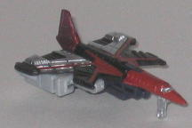
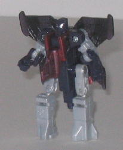
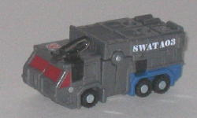
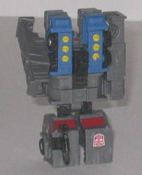

Thrust
vs. Anti-Blaze
Thrust
vs. Anti-Blaze
Size
: Mini-Con (2-pack)
Overall Rating
: 6.9
 Thrust
Thrust


Allegiance
: Decepticon, Minicon
Difficulty of Transformation
: Easy
Color Scheme
: Charcoal black, light
milky gray, very dark translucent purple, fuchsia, and some shiny sparkly
violet-red, silver and black
Individual Rating
: 7.4
(NOTE: Because this toy is a repaint, this
is not a full-blown review. This mainly covers any changes made to the
toy and the color scheme, and merely compares it to Energon Scattor. For
a review on the mold itself, read the review of Energon Scattor
here
.)
Thrust, in terms of his
general alt mode and color scheme, is a throwback to the G1 character of
the same name. And I have to say, Thrust's color scheme looks really schnazzy
and eye-catching. The transparent dark purple serves as a nice dark color
to contrast against the others, and the light gray, charcoal black, and
fuchsia serve as very nice secondary colors, used in just the right amounts,
especially in the vehicle mode. The silver used on the back wings helps
to further beautify Thrust, and all in all it comes together very nicely,
albeit the robot mode could have used a few more paint apps.
No mold changes have
been made to Thrust, though he does have a new Decepticon emblem emblazed
on the side of his tail fin. Also, I don't know if this is just mine or
not, but the left elbow joint in robot mode is REALLY loose, to the point
where it falls off if you move it around a bit.
Thrust Bio
:
For Thrust and his mates on the Sky
Terror Team there is no greater joy then to defy the laws of the Mini-Con
Council of Sages. The peaceful Mini-Con colonies on the moons of Cybertron
are more prison than home to Thrust, who thrives on chaos. The appearance
of the black hole offered a
rare opportunity for him. The Council
of Sages' refusal to ask the Autobots for help made it easy for him to
sabotage the ships intended to evacuate the Mini-Con robots, leaving them
all trapped on the increasingly dangerous colonies as the black hole grows
ever more powerful.
Strength: 7.0
Intelligence: 5.5
Speed: 10+
Endurance: 9.0
Rank: 5.0
Courage: 8.0
Fireblast: 7.5
Skill: 8.5
 Anti-Blaze
Anti-Blaze


Allegiance
: Autobot, Minicon
Difficulty of Transformation
: Very
Easy
Color Scheme
: Dull moderately dark
gray, dull moderately dark blue, and some black, dull yellow, brick red,
and very dark translucent purple
Individual Rating
: 6.3
(NOTE: Because this toy is a repaint, this
is not a full-blown review. This mainly covers any changes made to the
toy and the color scheme, and merely compares it to the original Armada
Firebot. For a review on the mold itself, read the review of the original
Armada Firebot
here
.)
Anti-Blaze has a rather
dull color scheme, to be blunt-- dull gray and blue do not eye-catching
colors make. However, it is certainly realistic, and realistic colors aren't
always very exciting. What ISN'T realistic is the weird red-painted windows,
though-- I'm not sure what Hasbro has with red windows, I think they look
really tacky. (I'm also not sure why the miniature hose is purple, but
that's such a small part of the toy it's easily ignored.) Although I like
the "SWAT A03" paint app, it comes at the expense of too many other paint
apps-- only his front windows, his head visor, and the little button-like
things on his robot shoulders are painted besides the SWAT A03 app. Even
his missiles used in weapon mode are unpainted, which is a real shame.
Anti-Blaze has no mold
changes, though he does sport an Autobot emblem above his front windows.
Anti-Blaze Bio
:
Anti-Blaze, a junior member of the Mini-Con
Council of Sages, was among those who argued most passionately against
asking Optimus Prime and his Autobots for help. he felt that involvement
with the larger Transformers had brought only grief to the Mini-Con race,
though he now regrets his position. He has been forced to make the unpleasant
transition from a relatively unknown political figure to a military leader
at the front lines as he fights against Thrust and hte other evil Mini-Con
rebels.
Strength: 7.0
Intelligence: 8.5
Speed: 7.5
Endurance: 9.0
Rank: 9.0
Courage: 10.0
Fireblast: 8.5
Skill: 8.5
Thrust has the best color
scheme of any iteration of that mold, hands down, and is a great mold as
well. However, Anti-Blaze is a tad dull in terms of his color scheme, and
he isn't that great of a Minicon either. So, you get one really cool mold
and a so-so one if you buy this pack. This one's about middle-of-the-road
when it comes to the Wave 3 Minicon packs-- Thrust IS mighty nifty, but
given that you have to buy Anti-Blaze with him too, you're probably better
off spending your money on another, larger Cybertron figure unless you're
a Minicon completist.
Review by Beastbot
Back to Transformers:
Cybertron Index